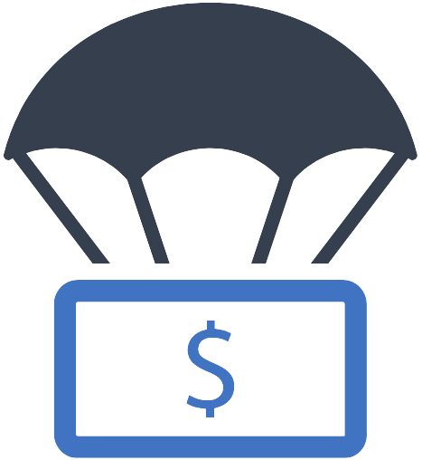

¿Qué es el Ingreso Solidario?
Es un esquema el cual se entrega una
transferencia monetaria en favor de los hogares
en situación de pobreza y vulnerabilidad que
no sean beneficiarios de programas sociales del Estado.
Loa hogares en condición de pobreza
y vulnerabilidad, afectados en sus
ingresos como consecuencia de la pandemia de coronavirus,
que no hagan parte de los programas sociales
"Familias en Acción", "Colombia Mayor",
"Jóvenes en Acción" y "Devoluvión del IVA"
podrán acceder a esta medida social.

